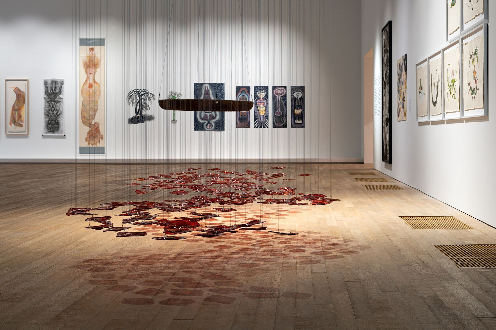

Lagos Biennial 2024 : REFUGE
Tafawa Balewa Square
3.2.2024 - 10.2.2024
The Lagos Biennial brings together artists who explore how to create an operative notion of refuge that can offer alternate paths towards constructing renewable communities and work towards ecological justice in this historical moment of systemic crisis. [read more]
Programme

Green Snake: Women-Centred Ecologies
Tai Kwun Contemporary
25.3.2024 - 1.4.2024
Green Snake: women-centred ecologies focuses on the connections between art and the larger themes of ecology in the context of rising temperatures and extreme weather events. Gathering more than 30 artists and collectives from 20 countries, the exhibition presents over 60 works that draw on mythologies and world views with women at their heart to explore possibilities for other ecological relationships and imagine other futures. [read more]
E-GUIDEBOOK
Green Snake: Women-Centred Ecologies
Tai Kwun Contemporary
25.3.2024 - 1.4.2024
Green Snake: women-centred ecologies focuses on the connections between art and the larger themes of ecology in the context of rising temperatures and extreme weather events. Gathering more than 30 artists and collectives from 20 countries, the exhibition presents over 60 works that draw on mythologies and world views with women at their heart to explore possibilities for other ecological relationships and imagine other futures. [read more]
E-GUIDEBOOK

Cosmopolis #2: rethinking the human
Centre Pompidou
23.10.2019 - 23.12.2019
Artists and critical thinkers address questions of technological diversity, scale and of social value, reaffirming other modes of existence, geographic articulations and cosmologies. [read more]
Brochure